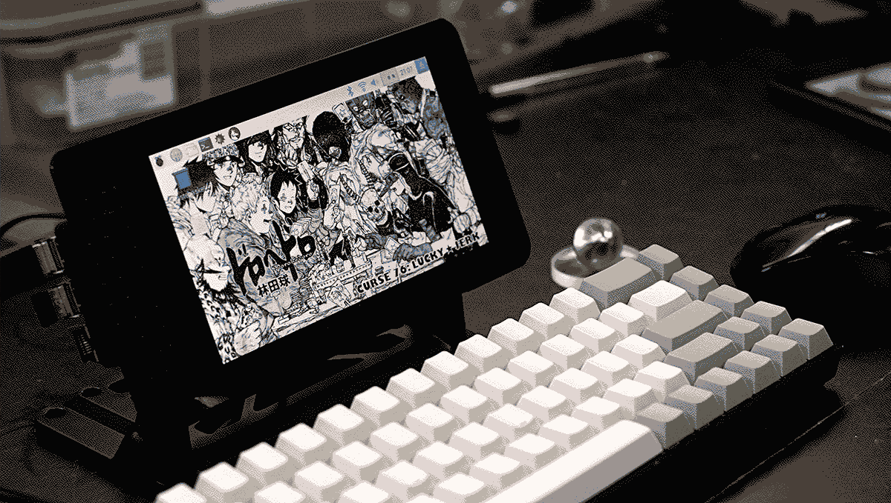
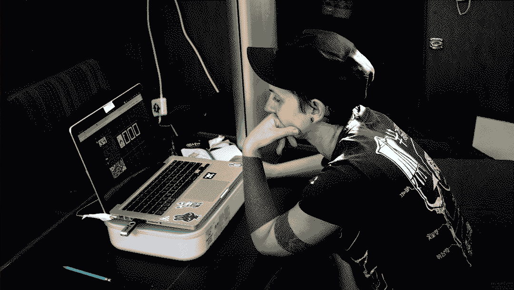

Because I don't always have a lot of power available on the boat I have a two workstations, one for regular usage and the other for low-power situations.
Low-power workstation
I write using Left on my Raspberry Pi.
- Raspberry Pi 3B+
- Raspberry Pi Touch 7", 800x480
- SmartPi Touch 7" Case
- 32GB usb stick
- TADA68 mechanical keyboard
- Bluetooth mouse

I can draw on a Pi using Noodle. I also use an old Ipad 2 to draw using Autodesk Sketchbook (no stylus). It isn't the best software ever, not sure I'd recommend it, but I use it since I have it. The Ipad 2's battery lasts a long, long time, and it charges quickly. The goal would be to use Noodle on it too.
Regular workstation
My primary computer is named Vincent, it is an old 2010 Macbook Pro with the ElementaryOS Linux operating system, a generous gift from my friend John Eternal. I draw by hand a lot, and digitize the drawings by photographing them and cleaning them up in Krita. I like to dither (using dither-it) my art afterwards with the Atkinson algorithm, to save space, but also because I like the look.
- Wacom intuos 4 tablet
- Macbook Pro 2010
- Elementary OS